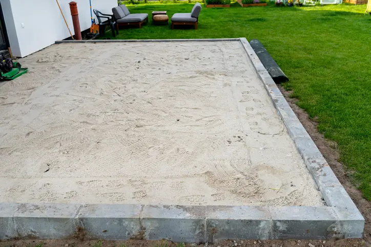

Concrete Bases Installed Properly For Hot Tubs
Hot tubs place a lot more consistent weight onto a slab than standard garden structures, so the base underneath needs to be prepared properly from the start. We install reinforced concrete hot tub bases across Slough with proper excavation, compacted sub-base preparation and level finishing.
A lot of the gardens we work in already have old paving slabs, broken concrete or partial bases underneath. In most cases we remove unstable material first rather than pouring directly over questionable ground that could eventually shift underneath the slab.
We also regularly deal with long access routes from the road to the rear garden. That normally just means planning the material movement properly and keeping the installation organised so the garden stays clean throughout the work.
If you are still comparing options, you can also view our main concrete shed base installation service in Slough .
How We Prepare Hot Tub Concrete Bases
Most hot tub base jobs start with clearing the area fully and checking what is underneath the surface layer. Old slabs and thin patches of concrete can sometimes look solid initially but move once pressure is applied, especially after wet weather.
We normally excavate to the required depth, install a compacted MOT sub-base and then set the slab height carefully before concrete is poured. Drainage planning matters as well because standing water around the slab can eventually affect surrounding ground conditions.
Typical hot tub base preparation includes
- Excavation and removal of unstable material
- Compacted sub-base installation
- Levelling and edge forming
- Drainage and fall planning
- Reinforcement where additional load support is needed
- Clean concrete finishing ready for installation
Concrete is normally supplied through local batching plants so the mix arrives consistent and ready for placement. We keep installation timing tight so the slab can be finished properly before curing begins.
Doing The Job Properly Avoids Future Problems
- We build slabs designed to prevent movement under long-term load
- Ground preparation is handled properly before concrete is poured
- We keep installations clean and organised in real residential gardens
- Drainage and water run-off are planned before finishing levels are set
- Access issues are planned operationally rather than rushed on the day
- Clear communication from quotation through to installation
A lot of the problems people end up dealing with later usually come from shortcuts during preparation. We focus heavily on getting the groundwork right because once the hot tub is installed, correcting movement or drainage issues becomes much harder.
Slough Concrete Base Installations



Drainage Problems Can Cause Long-Term Water Issues
One of the biggest mistakes on hot tub base installations is ignoring drainage planning completely. A slab might initially look level and solid, but if water sits around the perimeter continuously, the surrounding ground can soften and start moving over time.
We regularly come across older slabs where water pools directly against the base because no fall was planned properly during installation. That usually leads to surface water problems, movement around slab edges or sections of the base gradually becoming uneven.
Another common issue is pouring directly over existing slabs without checking what condition they are actually in underneath. Partial bases and old paving can shift independently below the concrete if they were never installed properly in the first place.
This is also why proper reinforcement and preparation matters on heavier installations. We explain more about that here: what actually makes a concrete base structurally strong .
Things We Normally Discuss Before Starting
Before installation we normally check the hot tub size, expected weight, garden access route and what existing ground conditions look like underneath the surface area.
In Slough gardens, access can vary quite a bit. Some jobs have direct side access while others involve long movement routes through rear gardens. We simply plan around it properly and organise the installation accordingly.
We also discuss final slab sizing carefully. The base needs to support the full hot tub footprint properly without unsupported edges or weak points developing later.
If you are still budgeting the project overall, this guide explains more about rough concrete base costs in Slough .
Some homeowners also ask whether planning permission applies depending on positioning and surrounding structures. You can read more here: do you need planning permission for a concrete base in Slough .
Get A Quote For Hot Tub Concrete Base Installation In Slough
We install reinforced concrete bases for hot tubs across Slough and nearby areas with proper preparation, drainage planning and clean installation work throughout the job.